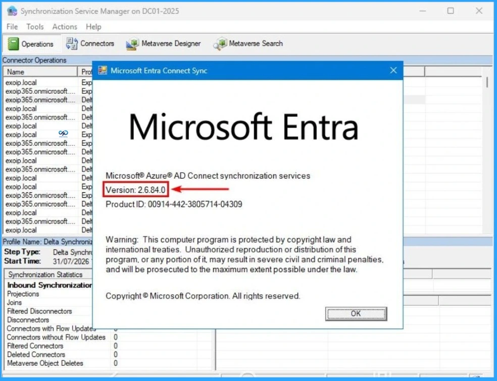
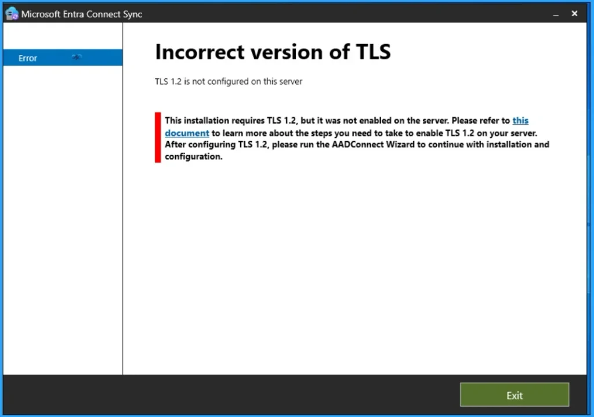

Key Takeaways:
- Microsoft Entra Connect Sync Mandatory Upgrade
- All synchronization services will STOP working on September 3
- Prerequisites of Microsoft Entra Connect Sync Upgrade
- Action Required for Entra Connect Sync
Let’s discuss about Microsoft Entra Connect Sync: Mandatory Upgrade to Version 2.5.79.0 Before 30th September 2026. Microsoft announced a new update for organisations using Microsoft Entra Connect Sync. Entra Connect Synchronisation service will stop working on September 30, 2026.
Table of Contents
Microsoft Entra Connect Sync: Mandatory Upgrade to Version 2.5.79.0 Before 30th September 2026
Microsoft strongly recommend the organizations to upgrade their Entra Connect to new Version before deadline to avoid service disruption. IT admins should add this upgrade to their change-management calendar rather than waiting for emergency fixes. The installation file is available only via the Microsoft Entra Admin Center.
| Important Updates |
|---|
| Minimum required version: 2.5.79.0 |
| Latest recommended version: 2.6.84.0 |
| Deadline – September 30, 2026 |

Details of Version 2.6.84.0
Microsoft strongly recommends upgrading to version 2.6.84.0 instead of only meeting the minimum version requirement. This version include includes security fixes and is currently the recommended release. Using 2.6.84.0 avoids last‑minute emergency upgrades and ensures compliance with Microsoft’s support matrix.
Action Required – If you’re managing Hybrid Identity, Microsoft 365, Active Directory or Entra ID, now is a good time to review your Entra Connect infrastructure and plan the upgrade well before the deadline.
Minimum Prerequisites
There are some prerequisites must be followed by your organization, before upgrading. It includes .NET Framework 4.7.2, TLS 1.2, Supported Windows Server version, Proper backup and rollback plan, Validation of synchronization rules and configuration, Staging/active server readiness.

Need Further Assistance or Have Technical Questions?
Join the LinkedIn Page and Telegram group to get the latest step-by-step guides and news updates. Join our Meetup Page to participate in User group meetings. Also, Join the WhatsApp Community and WhatsApp Channel to get the latest news on Microsoft Technologies. We are there on Reddit as well.
Author
Anoop C Nair is Workplace Technology solution architect with 25+ years of experience in global enterprise organizations such as JP Morgan, Capgemini, etc. He is Microsoft Certified Trainer. Microsoft MVP from 2015 onwards for consecutive 11 years! He also conducts Intune and modern workplace tech training for enterprise organizations. He is Blogger, Speaker, and Founder of HTMD Community and HTMD Conference. His focus is on Device Management technologies such as Intune, Windows, Cloud PC. He writes about technologies like Intune, SCCM, Windows, Cloud PC, Windows, Entra, Microsoft Security.